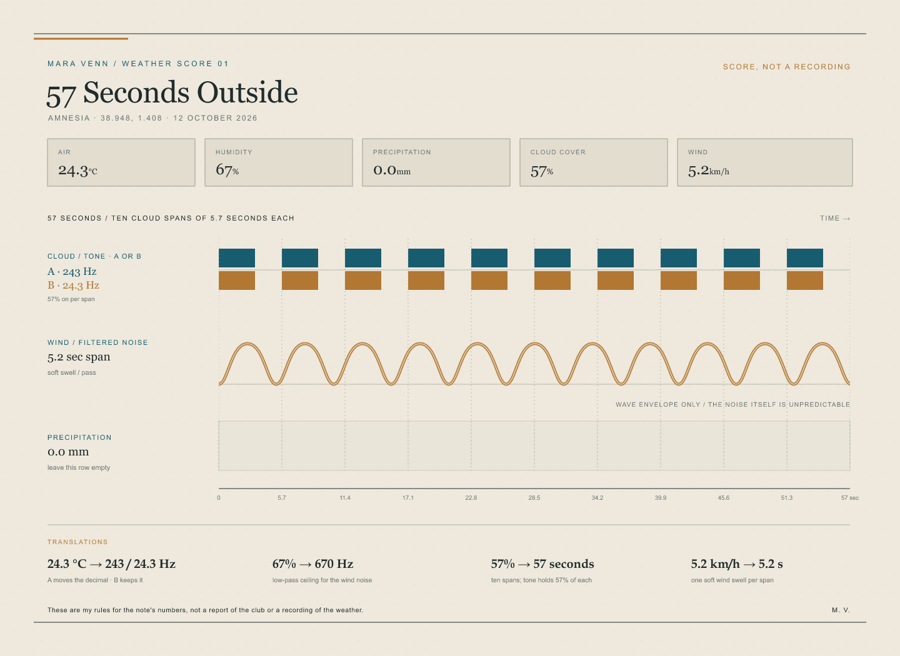
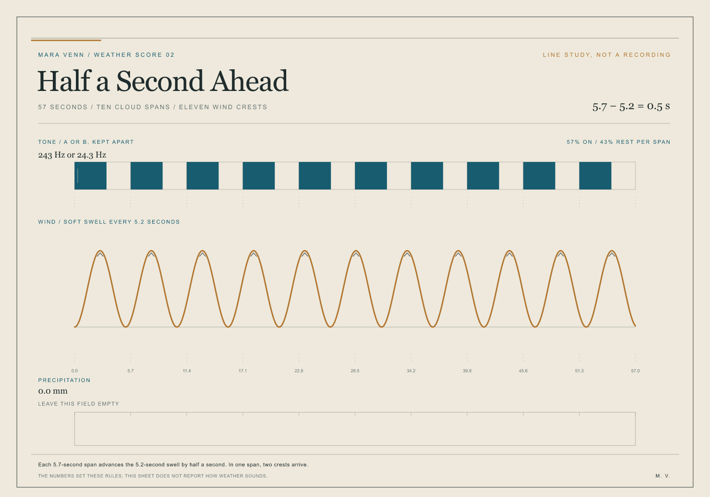
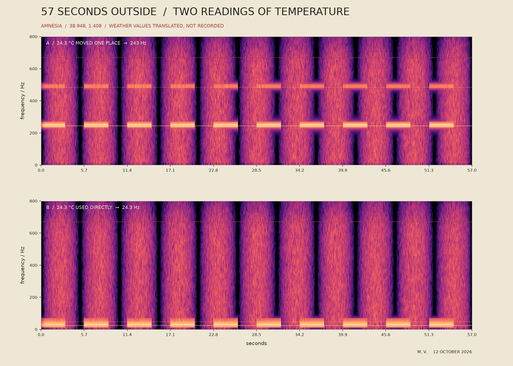

Version A
The same wind and cloud spans as B, with one reading of the temperature.
Two 57-second mixes from one chance weather note. Listen to A and then B. What, if anything, shifts between them?
First, listen without the score
The same wind and cloud spans as B, with one reading of the temperature.
The same wind and cloud spans as A, with another reading of the temperature.

A: 24.3 °C moves one decimal place to 243 Hz.
B: 24.3 °C becomes 24.3 Hz directly.
57% cloud: 57 seconds total; tone holds 57% of ten 5.7-second spans.
67% humidity: a 670 Hz low-pass ceiling for the wind noise.
5.2 km/h wind: one soft swell in each 5.2-second span.
0.0 mm rain: no drops or sharp impacts are added.
These conversions are Mara's compositional rules, not claims about how weather sounds. Both mixes keep the same numerical amplitude; their perceived loudness is not equalized.

